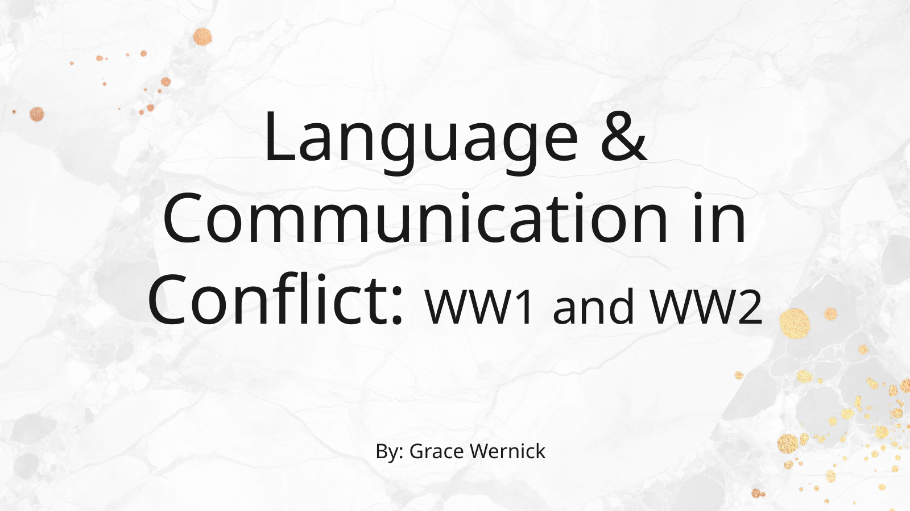

Individual Project • Spring 2025
Language & Communication in Conflict: With a Focus on WW1 and WW2
Montcalm Community College
HIST 257 — 21st Century World:
Global History & Issues since 1900
Grade: 100% (125/125)
A multimedia research project exploring the role of language and communication in global conflict. This project combines academic research, written analysis, oral presentation, visual storytelling, and audience-centered communication.
Public Speaking
Research
Visual Communication
Critical Thinking
Presentation Design
View Project →